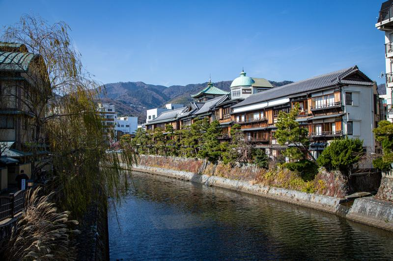
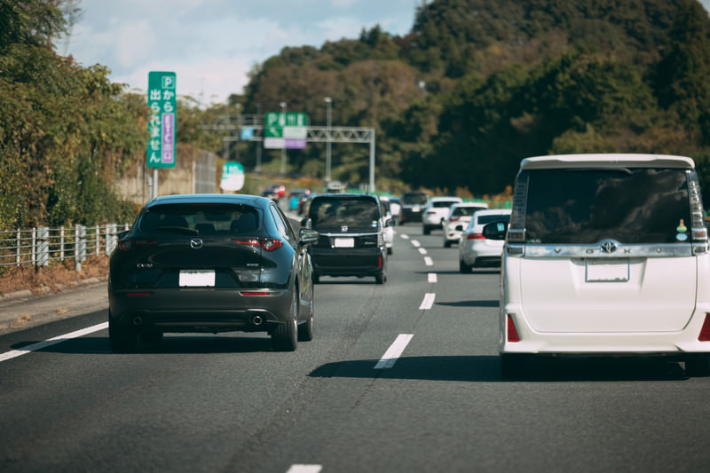

交通のご案内

車でお越しの方
最寄りのインターチェンジは○○自動車道 ○○インターチェンジです。
○○インターチェンジから、約20分でアクセスできます。
電車をご利用のお客様
新幹線をご利用のお客様の最寄りの駅は、○○新幹線 新○○駅、在来線をご利用のお客様は、○○本線 ○○駅が最寄り駅です。
駅からジョビ温泉までは、送迎バスが運行しているので、ご利用ください。
周辺観光のご案内
○○童話村
作家の○○の童話をイメージした施設です。 ○○の童話の世界で楽しく遊べ、人気のスポットです。
○○記念館
○○の童話、農村、世界などの展示や、○○ゆかりのものが展示されていて、 ○○の世界に親しむことができます。
○○海岸
○○が教師時代、生徒たちを連れて海岸に訪れ、「○○という国にある海岸を歩いているようだ」 と名付けました。